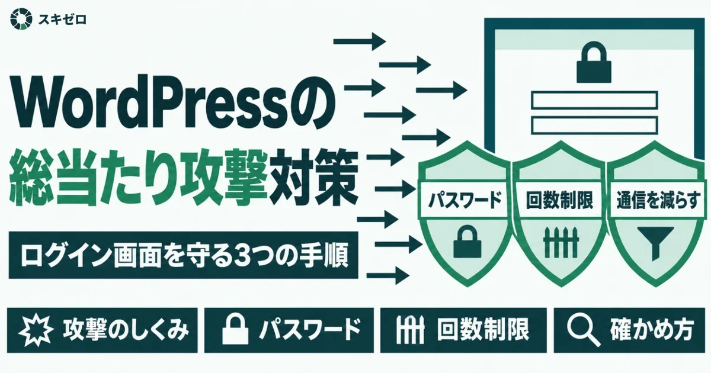
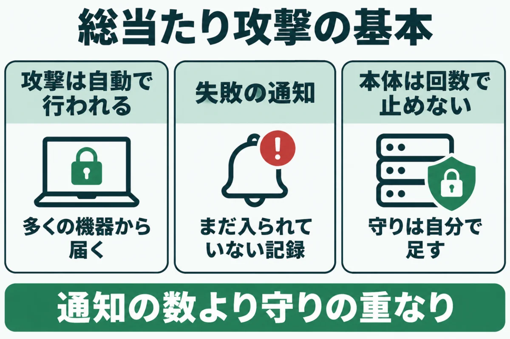
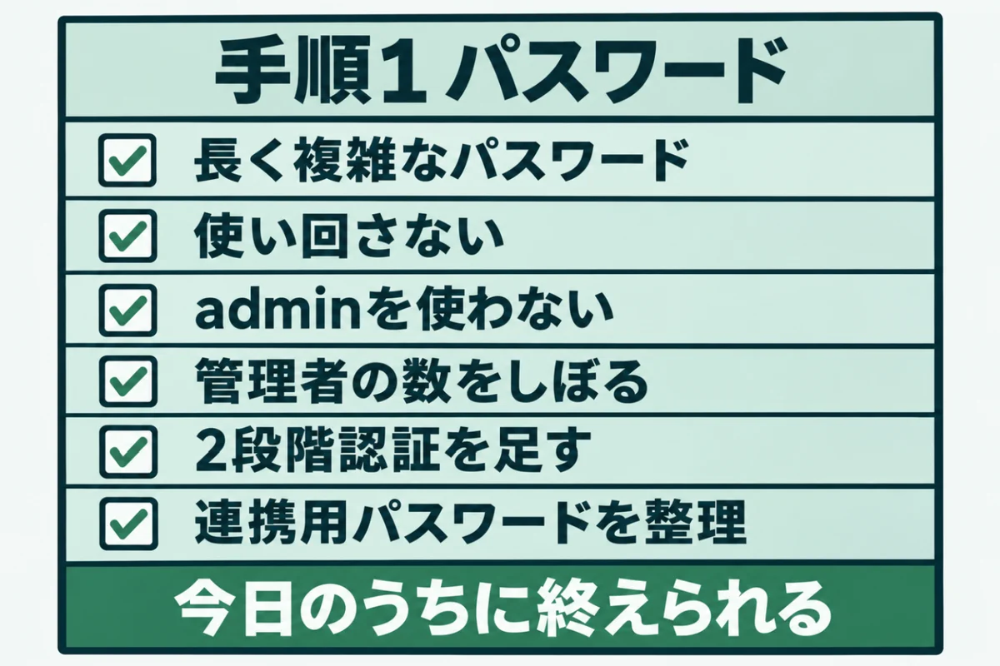
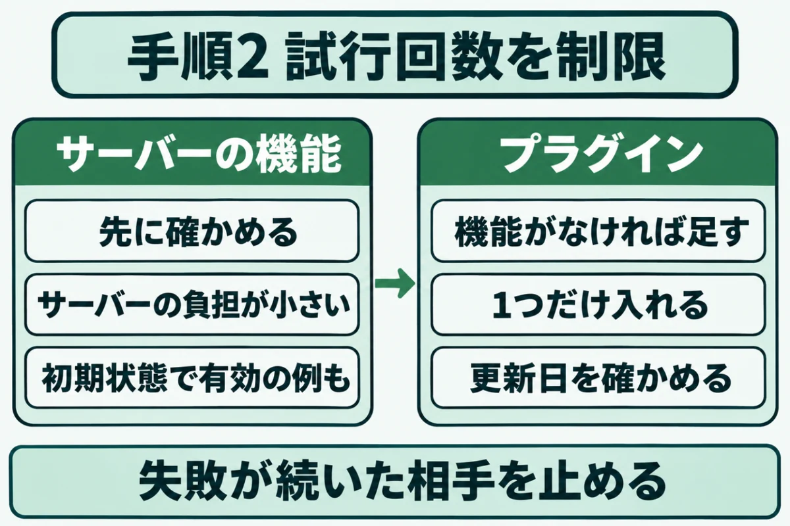
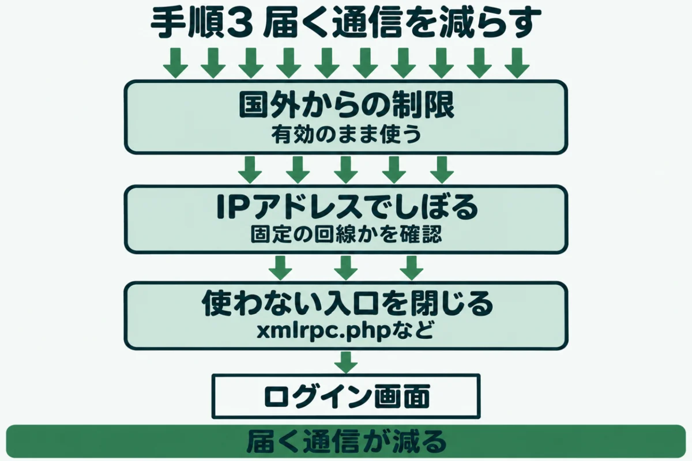
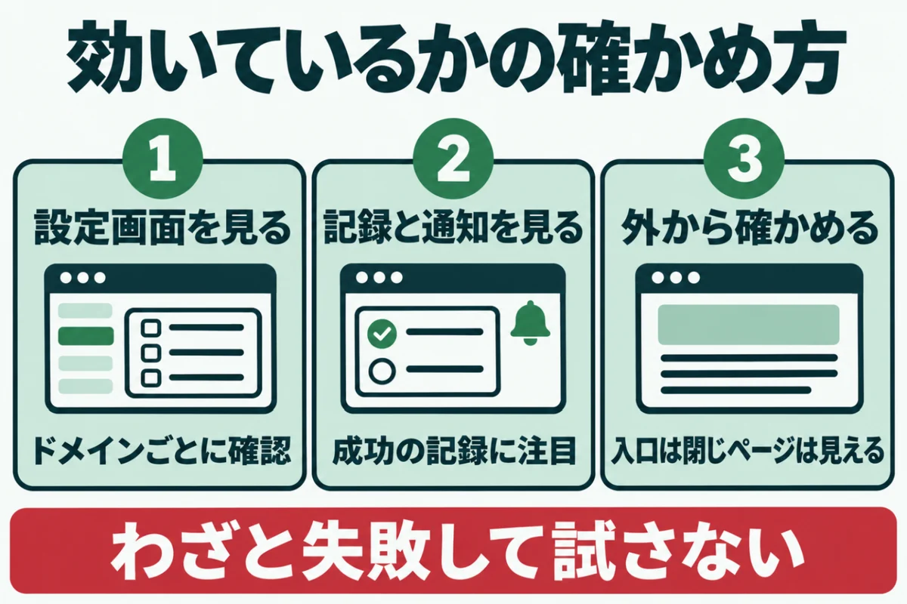

WordPressのブルートフォース対策総当たり攻撃からログイン画面を守る3つの手順と確かめ方

「ログインに失敗しました」という通知が次々に届き、不安になっていませんか？
WordPressのログイン画面は、自動の総当たり攻撃の的になりやすい場所です。知らせが多いと怖くなりますが、打てる手は決まっているので落ち着いてください。
この記事では、総当たりを受けにくくする守りを3つの手順にまとめました。パスワード、試行回数の制限、届く通信を減らす設定の順に重ねていきます。
内容は、WordPressの公式ドキュメントとサーバー会社のマニュアルで確かめました。サーバーの管理画面に入れる状態にしてから読み進めてください。
WordPressへのブルートフォース攻撃とは？対策の前に知りたいこと

ブルートフォース攻撃は、ユーザー名とパスワードの組み合わせを当たるまで試す攻撃です。WordPressの公式ドキュメントも、ログインがある仕組みはどれも狙われると説明しています。
WordPressは使う人が多いぶん、的になりやすいだけです。対策の前に、通知の受け止め方と本体の仕組みを押さえておきましょう。この2つが分かると、手順の意味がつかみやすくなります。
ログインの失敗が大量に届くのは珍しくない
総当たりの試行は、人の手ではなく自動の仕組みで行われます。公式ドキュメントによると、多くの機器から分散して届くことが多い攻撃です。失敗に終わっても、通信が多いとサイトが重くなることがあります。失敗の通知は、まだ入られていない記録でもあるのです。ただし、成功したログインに心当たりがなければ話は別でしょう。その場合の動き方は、別の記事にまとめました。WordPressの管理画面に不正ログインされたときの対処｜すぐやる3つと再発防止を見てください。
WordPress本体は失敗の回数で止めない
WordPressを入れただけの状態では、失敗の回数に歯止めがかかりません。公式ドキュメントは、回数の制限をサーバーやCDN、プラグインで行うものとして書いています。本体が自分で止めるという説明はありません。回数制限のプラグインの配布ページには、既定では試行の回数に上限がないとあります。守りを足さなければ、何度でも試せる状態が続くのです。2段階認証も本体には入っておらず、プラグインなどで足す形になります。だからこそ、次の章からの手順を順に重ねてください。
WordPressのブルートフォース対策の手順1：パスワードとアカウントを固める

WordPressのブルートフォース対策は、当たりにくいパスワードにすることが土台です。総当たりは当たるまで試す攻撃なので、当たるまでの道のりを長くします。
公式ドキュメントも、守りの一覧の最初に強く使い回さないパスワードを挙げました。あわせて、狙われるアカウントそのものを減らしておきましょう。費用がかからず、今日のうちに終えられる手順です。
長く、複雑で、使い回さないパスワードに替える
IPAは、パスワードを「できるだけ長く」「複雑で」「使い回さない」ものにするよう勧めています。警察庁などの公表では、2025年に検挙された他人のIDやパスワードを使う手口は399件でした。そのうち、パスワードの設定や管理の甘さにつけ込んだものが84件で最多です。名前や会社名、辞書にある単語は避けましょう。WordPressでは、パスワードを替える画面に強さの目安が表示されます。管理者の全員が、目安を見ながら新しいものに替えてください。
- 参考：インターネットサービスへの不正ログインによる被害が増加中（2025年8月28日）｜IPA 独立行政法人 情報処理推進機構
- 参考：不正アクセス行為の発生状況及びアクセス制御機能に関する技術の研究開発の状況（令和8年3月12日）｜総務省
- 参考：Hardening WordPress｜WordPress Developer Resources
推測されやすいユーザー名と余分な管理者を減らす
公式ドキュメントは、「admin」というユーザー名を使わないよう勧めています。真っ先に試される名前だからです。管理者の数をしぼり、ふだんの作業は権限の小さいアカウントで行うことも勧められています。使っていないアカウントは、的を増やすだけです。運営者の自社サイト15件の点検でも、心当たりのない編集者のアカウントが2つ見つかりました。ユーザー名が外から見える経路は、別の記事で扱っています。WordPressのユーザー名が漏洩する5つの経路と隠し方｜見えているかの確かめ方を見てください。
2段階認証を足し、連携用のパスワードを見直す
パスワードが当てられても入れないよう、2段階認証を足します。公式ドキュメントは、すべての管理者に設定するよう勧めました。設定の手順と締め出されない準備は、次の記事にまとめています。WordPressのログインに2段階認証を設定する方法｜プラグイン選びと締め出されない準備です。外部のアプリとつなぐ「アプリケーションパスワード」も見直しましょう。使っていないものは、取り消しておくと安心です。運営者の自社サイトの点検でも、使っていないものが残っていました。
WordPressのブルートフォース対策の手順2：ログイン試行回数を制限する

WordPressのブルートフォース対策の2つ目は、失敗が続いた相手を一定の時間止めることです。試せる回数が減れば、当たるまでにかかる時間は大きく延びるでしょう。
止める場所は、サーバー側とプラグインの2通りがあります。公式ドキュメントは、できるだけサーバー側で止めるよう勧めました。プラグインはWordPressの中で動くので、攻撃が多いとサーバーの力を使うからです。
エックスサーバーはログイン試行回数制限設定を見る
エックスサーバーには「ログイン試行回数制限設定」があります。短時間に連続してログインの失敗があると、アクセスを制限する機能です。マニュアルによると、初期状態で「ON(有効)」になっています。制限は、かかってから24時間後に解除される仕組みです。サーバーパネルの「WordPressセキュリティ設定」を開き、ドメインごとに確かめてください。何回の失敗で制限されるかは、マニュアルに書かれていません。なお、2026年11月時点の内容です。
ConoHa WINGなど、ほかのサーバーの機能を確かめる
ConoHa WINGにも、同じ種類の「ログイン制限」があります。短時間に何度もログインの操作があると、自動で制限する機能です。コントロールパネルの「サイト管理」から「サイトセキュリティ」を開いてください。「WordPressセキュリティ」の「ログイン制限」で「管理画面ログイン」を「ON」にします。契約中のサーバーのマニュアルを先に見るのが近道でしょう。ロリポップとさくらのレンタルサーバでは、国外からの制限を公式マニュアルで確かめられました。回数の制限がないサーバーでは、プラグインで足します。
サーバーに機能がなければプラグインで足す
サーバーに回数制限がないときは、プラグインを1つ入れます。失敗が続いたIPアドレスを、一定の時間ログインできなくする仕組みです。候補の3つを、WordPress.orgの配布ページの情報で表にしました。表は2026年11月25日に確かめた内容です。同じ働きのプラグインを重ねて入れないでください。SiteGuard WP Pluginの配布ページにも注意書きがあります。ログインページの変更は、ほかのプラグインと併用できないという内容です。入れる前に、最終更新の日付と対応する版を自分でも確かめましょう。
| プラグイン | 有効インストール数 | 最終更新 | 必要な版 |
|---|---|---|---|
| Limit Login Attempts Reloaded（今の表示名は Limit Login Attempts Security） | 100万以上 | 2026年11月24日 | WordPress 5.4以上 |
| SiteGuard WP Plugin | 60万以上 | 2026年11月11日 | WordPress 6.0以上 |
| XO Security | 3万以上 | 2026年7月19日 | WordPress 6.0以上、PHP 7.2以上 |
WordPressのブルートフォース対策の手順3：ログイン画面に届く通信を減らす

WordPressのブルートフォース対策の3つ目は、ログイン画面に届く前に通信を止めることです。届く数が減れば、試される回数もサーバーの負担も小さくなります。
公式ドキュメントは、サーバーに届く前に止める方法の利点を挙げました。制限をかける場所は、ログインの入口だけにしぼるのが勧めです。国内の主なレンタルサーバーには、そのための機能が用意されています。
国外からのアクセス制限を有効のまま使う
エックスサーバーの「国外アクセス制限設定」は、初期状態で有効です。管理画面やログイン画面、xmlrpc.phpなどへの国外からの接続を制限します。マニュアルも、通常は有効のまま使うよう強く勧めているのです。ConoHa WINGの「海外アクセス制限」も、既定で全項目が「ON」になっています。ロリポップの「海外アタックガード」と、さくらの「国外IPアドレスフィルター」も同じ種類です。海外から管理画面を使うときは、制限に当たります。切る前に、許可するIPアドレスを登録できないかを確かめてください。
接続元が決まっているならIPアドレスでしぼる
管理画面を使う場所が会社だけなら、接続元でしぼる方法があります。エックスサーバーの「IPアドレス制限設定」は、登録したIPアドレス以外を止める機能です。対象は、管理画面のフォルダとログイン画面の2つになります。初期状態は「OFF(無効)」で、ホワイトリストを登録した場合だけ有効にできる仕組みです。会社の回線のIPアドレスが固定かを先に確かめましょう。固定でない回線では、自分が入れなくなるおそれがあります。有効にすると国外アクセス制限より優先される点にも注意してください。
使わない入口を閉じ、ログインURLの変更は補助にする
ログインを試せる入口は、ログイン画面だけではありません。公式ドキュメントは、xmlrpc.phpも総当たりの的になりやすいと説明しています。使っていないなら、止めておくのが勧めです。判断のしかたは、別の記事にまとめました。WordPressのxmlrpc.phpとは？止めるべきかの判断と安全な止め方を見てください。ログインURLの変更について、公式は雑音を減らせるとしています。ただし、それだけを唯一の守りにしないよう書かれているのです。
WordPressのブルートフォース対策が効いているかの確かめ方

WordPressのブルートフォース対策は、設定したあとに効いているかを確かめて完了です。設定を入れたつもりでも、ドメインごとに状態が違うことがあります。
確かめる面は、設定の画面、記録、外からの見え方の3つです。月に1度など、時期を決めて見直すと続けやすいでしょう。担当者が替わるときにも、同じ3つを引き継いでください。
サーバーの設定画面で有効になっているかを見る
最初に、サーバーの管理画面で制限が有効かを見ます。エックスサーバーなら、「WordPressセキュリティ設定」に項目が並んでいるはずです。設定はドメインごとなので、持っているドメインをすべて確かめましょう。わざと失敗を繰り返して試すのは避けてください。エックスサーバーの場合、自分が制限にかかると解除まで24時間かかるからです。急ぐ場合は、設定を一時的に「OFF」にする方法が公式に案内されています。作業が済んだら、「ON」に戻すのを忘れないでください。
ログイン失敗の記録と通知を見る
次に、ログインの記録を確かめましょう。公式ドキュメントも、ログから総当たりの試みが分かると説明しています。回数制限のプラグインには、失敗の記録や締め出しの通知を出すものがあるのです。たとえばXO Securityは、ログインの記録を残せます。見る点は2つです。成功したログインに心当たりがあるかと、失敗の数が減ったかを見ます。失敗の数より、成功の記録に目を向けましょう。心当たりのない成功があれば、すぐにパスワードを替えてください。
外からの見え方を確かめ、難しければ相談する
最後に、外からどう見えるかを確かめます。運営者の自社サイトは、エックスサーバーで動かしているものです。2026年11月に国外の回線から開くと、xmlrpc.phpと/wp-json/は403でした。トップページは200のままです。入口だけが閉じ、ページは見える状態が目安になるでしょう。スキゼロの無料簡易診断は、ユーザー名の見え方など8項目を外から判定します。知らない管理者がいる、サイトが重い状態が続くといった場合は別です。早めに制作会社や専門家へ相談してください。
URLを入れるだけで、ユーザー名の見え方やセキュリティ設定など8項目を無料で判定します。ログインの制限やアカウントの整理は、対策作業（14,800円から・税込）でもお受けしています。
無料で診断するWordPressのブルートフォース対策に関するよくある質問
ログイン失敗の通知が大量に届きます。乗っ取られたのでしょうか？
失敗の通知だけなら、乗っ取られたとは限りません。失敗は、その試行では入れなかったという記録だからです。まず、成功したログインに心当たりがあるかを確かめましょう。知らないユーザーや、覚えのない投稿がないかも見てください。どれもなければ、この記事の3つの手順を順に進めます。心当たりのない成功があれば、すぐにパスワードを替えて専門家に相談しましょう。
国外からのアクセスを止めれば、ほかの対策は要りませんか？
それだけでは足りません。国外からの制限は、国内を経由した試行までは止められないからです。WordPressの公式ドキュメントも、国ごとの遮断を自分で持ち続けることには注意を促しています。正しい利用者まで止めてしまい、手入れも難しいという理由でした。サーバー会社の機能は有効のまま使い、パスワードと回数制限を重ねてください。守りを1枚に頼らないことが大切です。
ログインURLを変えれば、総当たり攻撃は止まりますか？
試行の数は減ることがありますが、それだけでは止まりません。WordPressの公式ドキュメントは、雑音を減らせる手段として紹介しています。同時に、唯一の守りにしてはいけないとも書かれているのです。変えたURLが知られれば、同じように試されるからでしょう。変える場合も、強いパスワードと回数制限を先に整えてください。新しいURLを忘れて入れなくなる失敗にも気をつけましょう。
自分がログイン制限にかかって入れません。どうすればよいですか？
サーバーの機能で制限された場合は、サーバーの管理画面から対処します。エックスサーバーでは、制限から24時間後に自動で解除される決まりです。急ぐときは、サーバーパネルでログイン試行回数制限設定を一時的に切ってください。ログインできたら、設定を有効に戻すのを忘れないようにしましょう。プラグインで制限された場合の解除のしかたは、プラグインごとに違います。入れる前に、配布元の説明で解除の方法を確かめておくと安心です。
ログイン画面に画像認証を入れる意味はありますか？
入れる意味はあるでしょう。WordPressの公式ドキュメントは、自動の試行を遅らせる手段として挙げています。機械には手間のかかる確認を、ログインの前に1つ足す考え方です。SiteGuard WP PluginとXO Securityは、この機能を備えています。ただし、人が入力する手間も少し増える点には注意してください。パスワードと回数制限を整えたうえで、足すかどうかを決めましょう。
まとめ
WordPressへの総当たり攻撃は、自動で広く行われています。失敗の通知が多くても、守りが重なっていれば慌てる必要はありません。本体は回数で止めないので、守りは自分で足します。
手順は、パスワード、回数制限、届く通信を減らすの3つです。設定のあとは、設定画面と記録、外からの見え方で効き目を確かめましょう。
まずは、今の状態を知るところから。
URLを入れるだけで、数十秒で判定が出ます。登録はいりません。